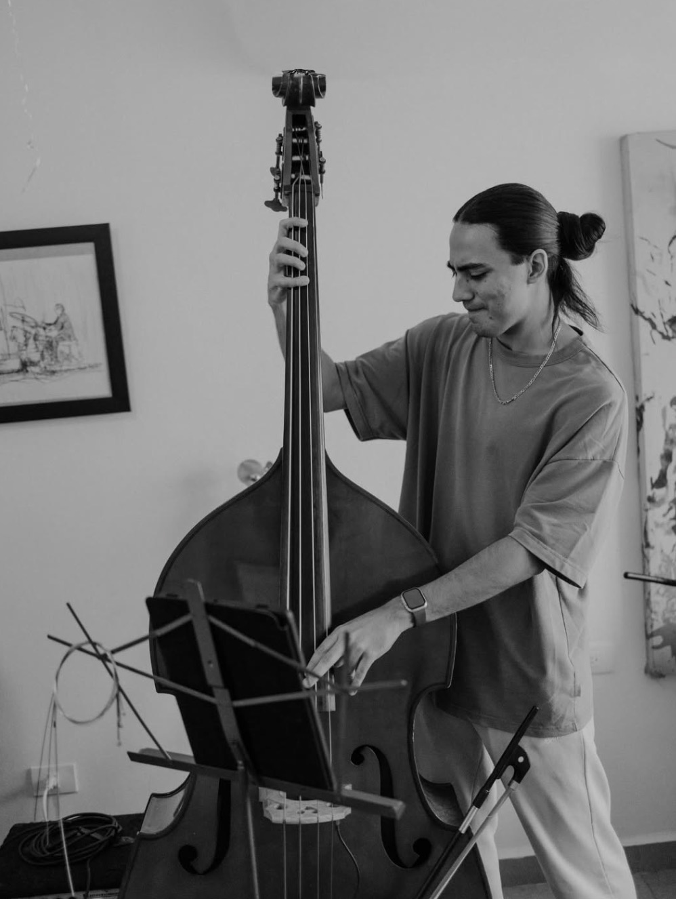
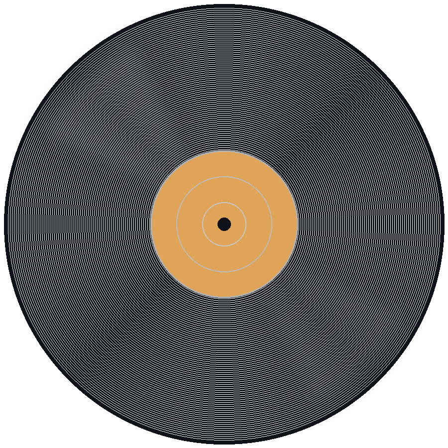
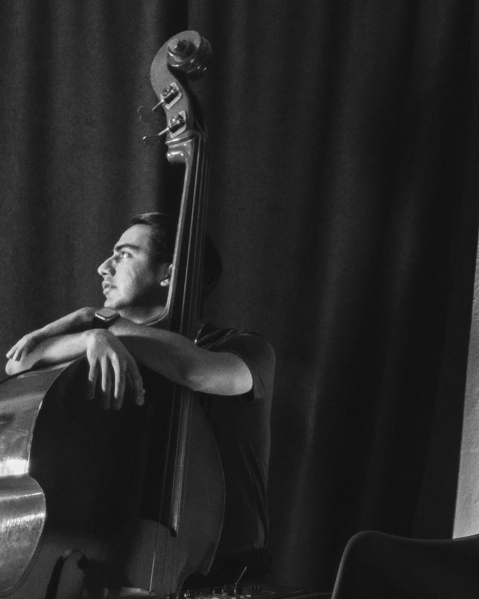
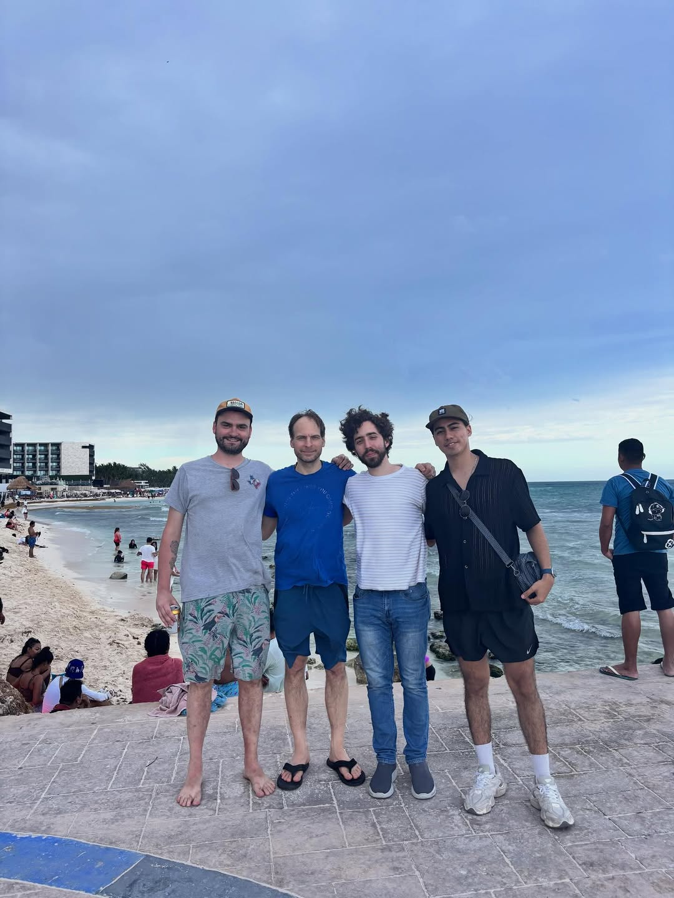
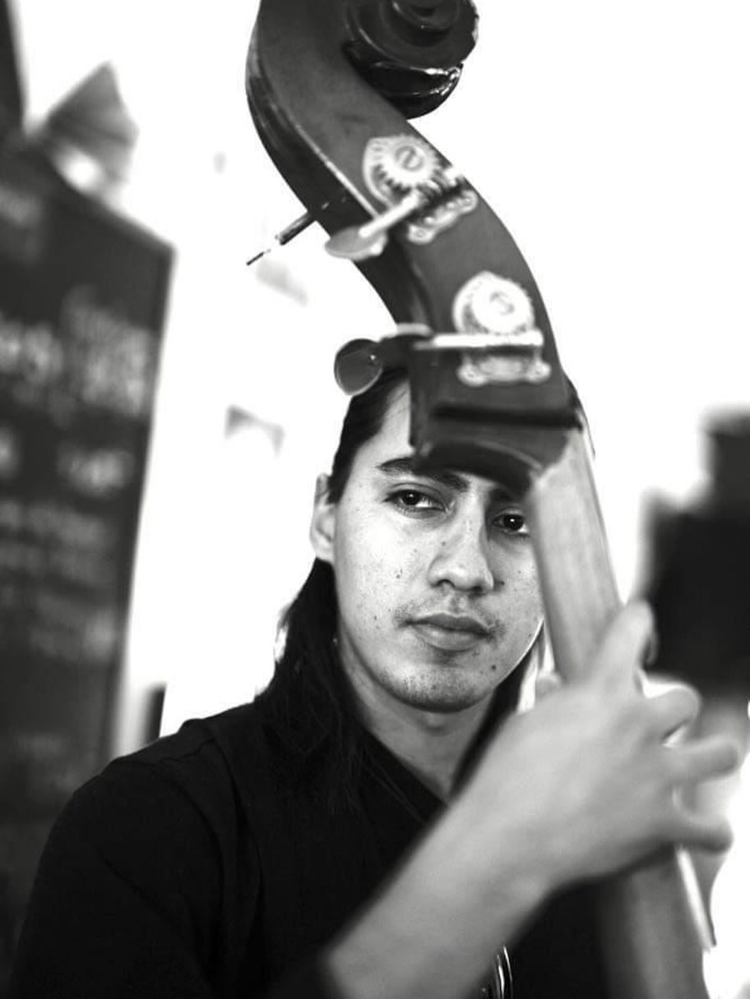
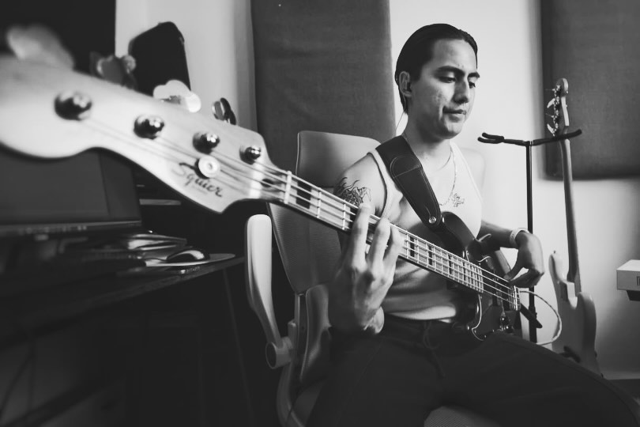
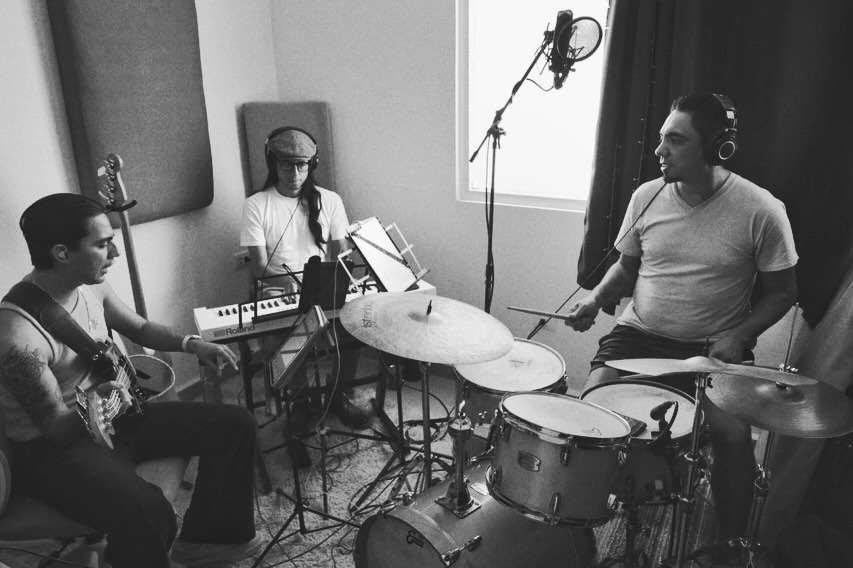
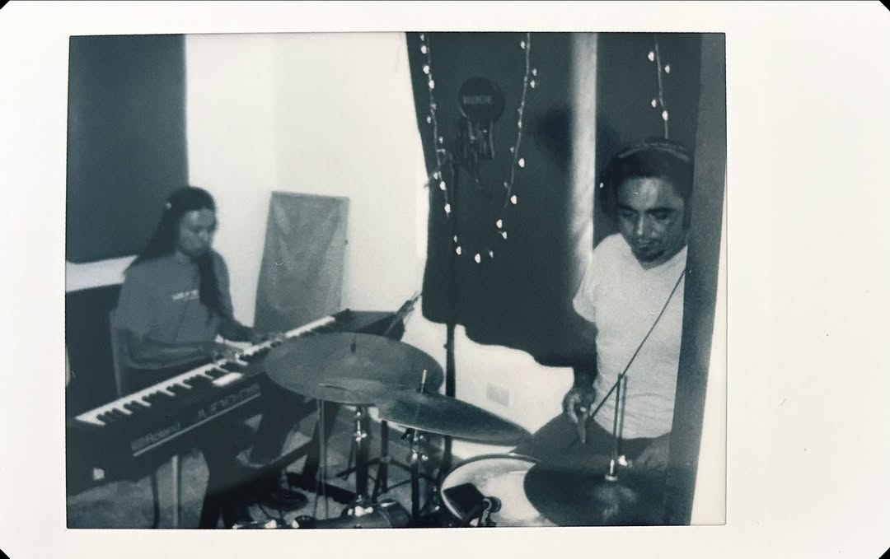
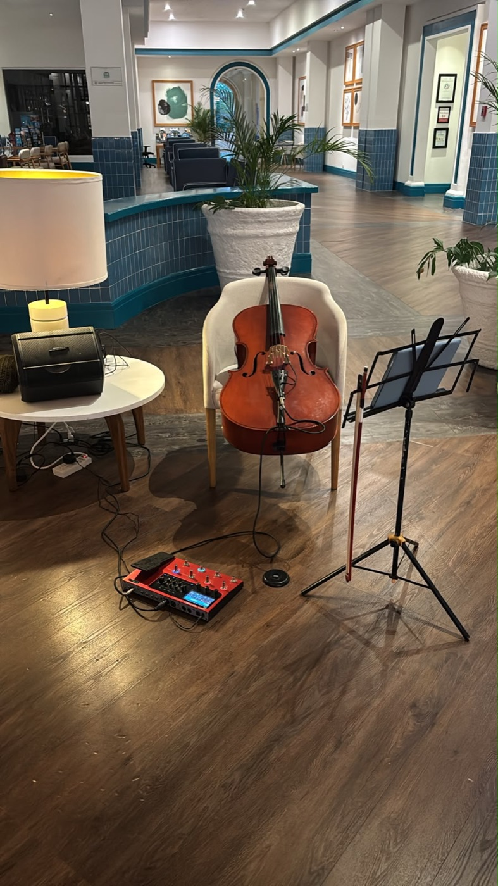

Contrabajo · Bajo eléctrico · Jazz
Ieoushua Barragán — contrabajista de la Riviera Maya y director del Barragán Quintet. La base rítmica detrás de los escenarios del jazz mexicano: del Playa del Carmen Jazz Fest al CECUT de Tijuana.
Bio
Bajista y contrabajista radicado en Playa del Carmen, Ieoushua Barragán es una de las piezas fundamentales del jazz en la Riviera Maya. Su recorrido conecta el Caribe con los foros más exigentes de la Ciudad de México — Jazzatlán Capital, Pizza Jazz Café — y, desde 2026, con la frontera norte al frente de su propio quinteto.
De sideman de alta confiabilidad a director musical: curaduría, arreglos y concepto sonoro bajo su propia firma.
Ha compartido escenario y cartel con Obed Orozco, Rodrigo López, Zoar Miranda, Diego Maroto, Joan Chamorro y Karen Souza, entre otros referentes del jazz nacional e internacional.

Trayectoria
Contrabajo en el álbum debut del baterista Zoar Miranda (Chancla Records). Hard bop y fusión progresiva junto a Romeo Rodríguez, Fidel González y Gil Henderson. Ingeniería de Irving Novelo; mezcla de Luis F. Herrera.
ContrabajoChancla RecordsCircuito de clubes de la capital con Bernardo Ron y Lucio De Rosa: Pizza Jazz Café, Jazzatlán Capital (Col. Roma) y El Convite, entre otros foros.
Jazzatlán CapitalPizza Jazz CaféNoche estelar en el Teatro de la Ciudad (4 de octubre) junto al pianista Obed Orozco y el guitarrista Rodrigo López, compartiendo cartel con Diego Maroto, Joan Chamorro, Èlia Bastida y Karen Souza.
Teatro de la CiudadExplayarte A.C.Debut como líder y director musical en el Foro Luna del Centro Cultural Tijuana, dentro del ciclo «Tardes de Jazz». El salto del Caribe a la frontera noroeste bajo firma propia.
LíderForo Luna · CECUT
Música & video
Sesiones en vivo y grabaciones de estudio con los proyectos donde Ieoushua sostiene la base.
Fechas
¿Quieres al Barragán Quintet en tu escenario? Agenda una fecha.
Playa del Carmen · 8:00 pm · RSVP 984 144 2987 · Prev. $180 / Cover $250
Mora Mora, cocina urbana & galería de arte · Playa del Carmen · Cover $180
Foro Luna, Centro Cultural Tijuana (CECUT) · Tijuana, B.C.
Teatro de la Ciudad · Playa del Carmen, Q. Roo
Jazzatlán Capital · Col. Roma, CDMX
Galería

EN EL FORO
DESPUÉS DEL SHOW · TEATRO
CONTRABAJO
SESIÓN DE ESTUDIO
GRABANDO EN TRÍO
ENSAYO
LISTO PARA EL SET · HOTELERÍA RIVIERA MAYAServicios
Quinteto de jazz con repertorio curado por Ieoushua para festivales, teatros, centros culturales y venues.
Base rítmica de alta confiabilidad para ensambles, giras y proyectos de jazz, jazz latino y fusión.
Grabación de contrabajo y bajo eléctrico para producciones discográficas y bandas sonoras.
Formatos de trío a quinteto para hoteles, restaurantes y eventos privados en la Riviera Maya.
Booking
Contrataciones para festivales, venues, sesiones y eventos privados. Respuesta directa, sin intermediarios.